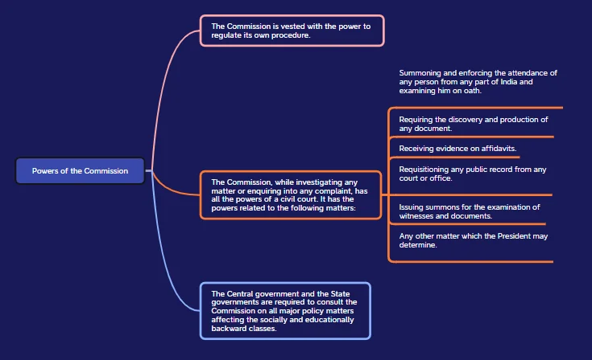

The special provisions in the Indian Constitution aim to promote social justice and inclusivity for marginalized communities like Scheduled Castes (SCs), Scheduled Tribes (STs), and Other Backward Classes (OBCs). These provisions address historical inequalities and strive to create equal opportunities for these groups. By establishing various commissions, the Constitution seeks to ensure their welfare and representation in society.
Special Provisions for Social Justice
Rationale of Special Provisions
Constitutional Provisions for Equality and Justice: In order to realize the objectives of equality and justice as laid down in the Preamble, the Constitution makes special provisions for these communities which are contained in Part XVI of the Constitution from Articles 330 to 342A. They are related to the following:
Classification of Special Provisions
These special provisions can be classified into the following broad categories:
- Permanent or Temporary: Some of them are a permanent feature of the Constitution, while some others continue to operate only for a specified period.
- Protective or Developmental: Some of them aim to protect these classes from all forms of injustice and exploitation, while others aim to promote their socio-economic interests.
Classification of Classes in the Constitution
- Specification of SC, STs, and OBCs: The Constitution does not specify the castes or tribes that are to be called the SCs, STs, or OBCs.
- Presidential Authority: The Constitution empowers the President to define and notify which castes or tribes are clas: The Constitution of India leaves it to the President to define and notify as to what castes or tribes in each state and union territory are to be treated as SCs under Article 341, STs under Article 342, and OBCs under Article 342 A.
- Variability Across States: Thus, the lists of the SCs or STs vary across states and union territories.
- Consultation Process: The President issues the notification after consulting the Governor of the State concerned.
- Parliamentary Control: Any changes to the inclusion or exclusion of castes or tribes in the Presidential notifications can only be made by Parliament, not through subsequent Presidential notifications.
- OBC Classification: The Constitution is silent on which section of Indian citizens are covered under Other Backward Classes (OBCs), SCs, and STs.
- Recent Developments: The 102nd Amendment Act of 2018 which added Article 342 A, empowered the President to specify the socially and educationally backward classes in relation to a state or union territory. However, the 105th Constitution Amendment Act (2021) restored the State governments’ power to notify the Socially and Educationally Backward Classes.
- Anglo-Indian Community: Unlike in the case of SCs, STs, and OBCs, the Constitution has defined the persons who belong to the Anglo-Indian community.
Special Provisions Related to These Communities
Reservation for SCs and STs in Legislatures
- Article 330 of the Indian Constitution: It deals with the reservation of seats for Scheduled Castes (SCs) and Scheduled Tribes (STs) in the House of the People, also known as the Lok Sabha.
- Proportional Representation: The number of seats reserved for SCs and STs is determined by the proportion in the population of these communities.
- Reservation for Anglo-Indian Community (Article 331): Till 2020, two Anglo-Indians in Parliament and one in State legislatures were nominated by the President and the Governor of the State respectively. In January 2020, the Anglo-Indian reserved seats in the Parliament and State Legislatures of India were discontinued by the 126th Constitutional Amendment Bill of 2019, when enacted as the 104th Constitutional Amendment Act, 2019.
- Extension of reservation: Originally, these two provisions of reservation and special representation were to operate for ten years (i.e., up to 1960) only. But this duration has been extended continuously since then by ten years each time. The last extension was done by the 104th Constitutional Amendment Act, 2019 which extended the deadline for the cessation of the reservation of seats for members from Scheduled Castes and Scheduled Tribes in the Lok Sabha and State Legislative Assemblies by a period of 10 years (i.e. till 2030).
- Presidential Authority to Appoint Commission: As per Article 300, the President may at any time and shall, on the expiration of ten years from the commencement of this Constitution, by order, appoint a Commission to report on the administration of the scheduled areas and the welfare of the scheduled tribes in the States.
- First Commission Appointment (1960): A commission was appointed in 1960, headed by U.N. Dhebar, which submitted its report in 1961.
- Second Commission Appointment (2002): After four decades, the second commission was appointed in 2002 under the chairmanship of Dilip Singh Bhuria. It submitted its report in 2004.
Appointment of a Commission to Investigate the Conditions of BCs
- Presidential Authority Under Article 340: Under Article 340, the President has the power to appoint a Commission to investigate the conditions of the socially and educationally backward classes, the difficulties faced by them and give recommendations to resolve those difficulties and improve their conditions.
- First Backward Classes Commission Appointment (1953): The first backward classes commission was appointed in 1953 under the chairmanship of Kaka Kalelkar which submitted its report in 1955. But, no action was taken on it.
- Second Backward Classes Commission Appointment (1979): The Second Backward Classes Commission was appointed in 1979 with B.P. Mandal, as chairman, submitted its report in 1980.
- Reservation for OBCs (1990): In 1990, the V.P. Singh Government declared a reservation of 27% of government jobs for the OBCs, later it was extended to educational institutions as well.
Formation of the National Commission for Scheduled Castes and National Commission for Scheduled Tribes
- 1978: The Government established a non-statutory, multi-member Commission for Scheduled Castes and Scheduled Tribes, while the Office of Commissioner continued to operate.
- 1987: The 1978 Commission was renamed the National Commission for Scheduled Castes and Scheduled Tribes.
- 1990: The 65th Constitutional Amendment replaced the Commissioner for SCs and STs with a multi-member National Commission for SCs and STs.
- 2003: The 89th Constitutional Amendment split the National Commission into two separate bodies: the National Commission for Scheduled Castes (under Article 338) and the National Commission for Scheduled Tribes (under Article 338-A).
- 2004: The National Commission for Scheduled Castes was formally established, consisting of a Chairperson, a Vice-Chairperson, and three other members. Similarly, the National Commission for Scheduled Tribes (NCST) was constituted on February 19, 2004.
It is important to recognize that Scheduled Castes and Scheduled Tribes differ in culture, tradition, and other aspects, necessitating a dedicated constitutional body to focus specifically on the needs of the Scheduled Tribes community in India.
National Commission for Backward Classes (NCBC)
- Initial Constitution: The NCBC was first established by the National Commission for Backward Classes Act, 1993 (27 of 1993) on April 2, 1993. It has been reconstituted seven times up to 2016.
- Repeal of Previous Act: The National Commission for Backward Classes Act, 1993 was repealed by the National Commission for Backward Classes (Repeal) Act, 2018, dated August 14, 2018.
- Constitutional Status: The current (8th) NCBC has been granted constitutional status through “The Constitution 102nd Amendment Act, 2018,” enacted on August 11, 2018. This act added Article 338B, establishing a Commission for socially and educationally backward classes.
- Commission Structure: The NCBC consists of a Chairperson, Vice-Chairperson, and three other members, all of whom hold the rank and pay of Secretary to the Government of India. Their conditions of service and tenure were notified by the Ministry of Social Justice and Empowerment on August 23, 2018.

Challenges Faced by the Commissions
- Issues with NCSC: It often favors the elite of these communities, experiences delays in conducting inquiries and delivering judgments, annual reports to Parliament often face delays and lack of discussion, undermining their importance, etc.
- Issues with NCST: The National Commission for Scheduled Tribes (NCST) has been largely dysfunctional for the last 4 years, failing to deliver a single report to Parliament according to a Parliamentary report. The reports of the NCST since 2018 are still under process in the Ministry of Tribal Affairs and have not been presented to Parliament. As per the Commission’s website, in the financial year 2021-22, it met only four times. The rate of unresolved complaints and cases is also close to 50%.
- Issues with NCBC: It suffers from manpower shortage, delay in reports submission, lack of funds, challenges of various caste groups demanding inclusion in the Backward Classes (BCs) list, etc.
- Short-staffed: The Commissions are short-staffed, as well as underfunded and therefore unable to deal satisfactorily with the volume of cases.
- Docile Commissions: The Commissions are reluctant to use the power of summons and mostly just write letters asking for clarification. Example: As per the Centre for Policy Research, there has been less than 10 summons by each of these commissions in the last 2 years.
Recommendations for Improving the Performance of Commissions: Insights from the Centre for Policy Research
- Strengthening the Role of Commissions: The government should follow the Constitution in the spirit it envisaged, among other things, by strengthening the role of the commissions as a truly independent watchdog body with punitive powers.
- Reviewing Commission Composition: The composition of the Commissions needs to be examined, in particular, the implications of commissions composed entirely of political appointments by the ruling party. The qualifications of the Chairperson and Members should be publicly available.
- Enhancing Regional Offices: The Regional offices need to be strengthened, along with an independent investigating mechanism. This should replace the standard operating procedure of asking for clarification as the dominant mode of functioning.
Conclusion
The welfare credentials of the government dictate that the well-being and development of these vulnerable sections at the last mile should not be compromised. The implementation and effectiveness of these provisions continue to be a subject of debate and scrutiny. Policymakers and civil society must evaluate their impact and take necessary measures periodically.
National Commission for Scheduled Castes (NCSC): Evolution, Functions, Challenges and Recommendations
The National Commission for Scheduled Castes (NCSC) is a Constitutional body established under Article 338 of the Indian Constitution, aimed at safeguarding the interests and rights of Scheduled Castes. Its evolution has seen significant milestones, from its initial non-statutory form in 1978 to its current structure, shaped by various Constitutional amendments. Despite its crucial role, the NCSC faces several challenges and criticisms regarding its effectiveness, biases, and operational procedures.
National Commission for Scheduled Castes (NCSC)
- Constitutional Body: The National Commission for Scheduled Castes is an Indian constitutional body created to safeguard the rights of Scheduled Castes and Anglo-Indian communities. It comes under the jurisdiction of the Ministry of Social Justice and Empowerment.
- Primary Objective: Its primary objective is to promote and protect their social, educational, economic, and cultural interests.
- Constitutional Provisions: Special provisions for this commission are outlined in the Constitution, specifically in Article 338.
Evolution of the NCSC
- Constitutional Status: The erstwhile National Commission for Scheduled Castes and Scheduled Tribes was granted Constitutional status by the 65th Constitutional Amendment.
- 1978: The Government established a non-statutory, multi-member Commission for Scheduled Castes (SCs) and Scheduled Tribes (STs). The Office of Commissioner continued to exist.
- 1987: The 1978 Commission was renamed the National Commission for SCs and STs.
- 1990: The 65th Constitutional Amendment replaced the Commissioner for SCs and STs with a multi-member National Commission for SCs and STs.
- 2003: The 89th Constitutional Amendment divided the National Commission for SCs and STs into two separate bodies:
- National Commission for Scheduled Castes (NCSC) under Article 338
- National Commission for Scheduled Tribes (NCST) under Article 338-A - 2004: The NCSC was officially formed with a Chairperson, Vice-Chairperson, and three other members.
Constitutions of the National Commission for Scheduled Castes
- First NCSC (24th February 2004)
- Second NCSC (25th May 2007)
- Third NCSC (15th October 2010)
- Fourth NCSC (22nd October 2013)
- Fifth NCSC (1st June 2017)
- Sixth NCSC (24th February 2021):
- Chairperson: Shri Vijay Sampla
- Vice-Chairman: Shri Arun Halder
- Members: Shri Subhash Ramnath Pardhi and Dr. Anju Bala
Appointment and Tenure
- Appointment: The body comprises the Chairperson, Vice Chairperson, and 3 other members. They are appointed by the President by warrant under his hand and seal.
- Tenure: Tenure and conditions of service of office are determined by the President, usually 3 years, under the National Commission Scheduled Castes Chairperson and Vice Chairperson and Members ( Conditions of Service and Tenure) Rules 2004. They cannot serve more than two terms.
Removal Process
- Resignation: The Chairperson and Vice-Chairperson and any other Member may, by notice in writing under his hand addressed to the President, resign his post.
- Removal of the Chairperson: The Chairperson can only be removed from office by an order of the President.
- Grounds for removal include misbehavior, which must be confirmed by the Supreme Court after an inquiry.
- The Supreme Court conducts the inquiry following procedures under Article 145 of the Constitution.
- If the Supreme Court reports that the Chairperson should be removed, the President can order the removal. - Suspension: The President may suspend from office the Chairperson in respect of whom a reference has been made to the Supreme Court under this sub-rule until the President has passed orders on receipt of the report of the Supreme Court on such reference.
- Conflict of Interest: If the Chairperson is or becomes in any way concerned or interested in any contract or agreement made by or on behalf of the Government of India or the Government of a State, he shall be deemed guilty of misbehavior.
- Notwithstanding anything the President may by order remove from office the Chairperson if the Chairperson:
- Is adjudged an insolvent.
- Engaged during his term of office in any paid employment outside the duties of his office.
- Is, in the opinion of the President, unfit to continue in office by reason of infirmity of mind or body.
Removal of Vice-Chairperson and other members
- Becomes an undischarged insolvent.
- Gets convicted and sentenced to imprisonment for an offense which in the opinion of the President, involves moral turpitude.
- In the opinion of the President, unfit to continue in office by reason of infirmity of mind or body.
- Refuses to act or becomes incapable of acting.
- Without obtaining leave of absence from the Commission, absent from three consecutive meetings of the Commission.
- In the opinion of the President, has so abused the position of Vice-Chairperson or Member as to render that person’s continuance in office detrimental to the interest of the Scheduled Castes.
- Provided that no person shall be removed under this clause until he has been given reasonable opportunity to be heard in the matter.
Functions National Commission for Scheduled Castes (SCs)
The following are the functions of the commission under Article 338(5):
- Investigation and Monitoring: The commission’s primary role is to investigate and monitor various aspects related to Scheduled Castes’ safeguards.
- Inquiries and Complaints: The commission is empowered to inquire into specific complaints regarding the deprivation of rights and safeguards for Scheduled Castes.
- Participation and Advice: The commission plays a crucial role in the socio-economic development of Scheduled Castes. It participates and advises on developmental planning and progress evaluation for initiatives planned for Scheduled Castes.
- Recommendations: The commission is empowered to make recommendations for the effective implementation of safeguards and other measures for the protection, welfare, and socio-economic development of Scheduled Castes.
- Additional Functions: The commission may perform other functions as required by the President, focusing on the overall welfare, development, protection, and advancement of Scheduled Castes.
- Annual Reporting: The commission is responsible for presenting both annual and additional reports, as deemed necessary by the Commission to the President
Challenges And Criticisms Faced By The National Commission For Scheduled Castes
- Elite Bias and Narrow Interpretation: The Commission has been criticized for interpreting its mandate narrowly, showing elite bias. It is most active and effective in service-related safeguards, mainly responding to complaints from the more educated and informed sections.
- Limited Impact on Atrocities and Untouchability: Despite competence in resolving service-related grievances, the Commission struggles to reduce violence and discrimination against Dalits. It has suggested improvements in procedures and reservations but has not driven significant change in landlessness or social discrimination.
- Member Competence and Appointment Procedures: The effectiveness of the Commission depends on its members, especially the Chairperson. The lack of standardized appointment procedures often results in less competent members, including politicians or bureaucrats seeking temporary positions.
- Non-Binding Recommendations: The Commission’s decisions are recommendatory, not binding, creating ambiguity under Article 338. It has quasi-judicial powers but lacks authority to enforce its judgments. Its effectiveness relies on moral authority and imaginative reporting.
- Monitoring vs. Complaint Redressal: The Commission faces tension between monitoring safeguards and addressing complaints. Activists argue for more investigative powers, but this could create inefficiencies and legal challenges, hindering its primary monitoring role.
- Reporting and Parliamentary Delays: The Commission must prepare an Annual Report for Parliament, often delayed due to the need for Action Taken Reports from various Ministries. There is no fixed period for discussing the Report in Parliament.
- Lack of Parliamentary Discussion: Reports, when tabled, are rarely discussed in Parliament. This contrasts with the active Parliamentary Committee on the Welfare of Scheduled Castes and Scheduled Tribes.
Institutional Proliferation and Leadership
- The proliferation of institutions has created confusion over roles and powers.
- Effectiveness often depends on the leadership of the institution.
Misuse of Article 338
- Collector, Bilaspur vs. Ajit P.K. Jogi (2012): Misuse of Article 338 was highlighted when a complaint was lodged about a false caste certificate.
- LIC v. National Commission for Scheduled Caste (2022): The Court clarified that the Commission can conduct inquiries but cannot issue directives on promotions or postings, which fall under service conditions.
Recommendations to Improve Functioning of National Commission For Scheduled Castes
- Importance of the Annual Report: The Annual Report is crucial but often tabled years late and rarely debated. An amendment in Article 338 or the rules is needed to fix a discussion period in Parliament.
- Improving Report Quality: Report quality, especially in data organization, has declined. The Commission should focus on qualitative studies and reliable data on societal changes, such as the “creamy layer” among SCs, and the impact of reservations.
- Improving Appointment Processes: A more institutionalized and autonomous appointment process for the Chairperson and members is needed. Appointments should be through a consensual political process to enhance effectiveness and address sensitive issues.
- Addressing Elite Bias: The Commission’s priorities favor the elite within these communities. To counteract this bias, the Commission should be more proactive with its suo moto powers and sensitive to exclusions due to lack of education and information.
- Internal Evaluation: The Commission should continuously evaluate and redefine its priorities to fulfill its mandate more equitably.
Conclusion
To enhance the effectiveness of the NCSC, it is imperative to address the issues of elite bias, non-binding recommendations, and delayed reporting. By improving the quality of reports, streamlining appointment processes, and ensuring proactive use of its powers, the NCSC can better fulfill its mandate. Continuous internal evaluation and a focus on genuine socio-economic changes are essential for the Commission to uphold its constitutional responsibilities and serve the Scheduled Castes more equitably.
National Commission for Scheduled Tribes (NCST): Functions, Structure, Challenges and Future Directions
The National Commission for Scheduled Tribes (NCST) was established in 2003 to protect the rights and interests of Scheduled Tribes in India. Operating from its headquarters in New Delhi and several regional offices, the NCST plays a crucial role in monitoring the implementation of laws and policies that affect these communities. The Commission’s work involves investigating grievances, advising the government on socio-economic development, and ensuring that the rights of Scheduled Tribes are upheld.
Overview of the National Commission for Scheduled Tribes (NCST) in India
Evolution of the National Commission for Scheduled Tribes
- Purpose: Articles 338 and 338A establish national commissions for Scheduled Castes (SCs) and Scheduled Tribes (STs) to improve their living conditions, ensure resource availability, safeguard their interests, and promote socio-economic growth.
- 1978: The Government set up a non-statutory, multi-member Commission for SCs and STs, while the Office of Commissioner continued to operate.
- 1987: The Commission established in 1978 was renamed the National Commission for SCs and STs.
- 1990: The 65th Constitutional Amendment replaced the Commissioner for SCs and STs with a multi-member National Commission for SCs and STs.
- 2003: The 89th Constitutional Amendment divided the National Commission for SCs and STs into two separate bodies: the National Commission for Scheduled Castes (Article 338) and the National Commission for Scheduled Tribes (Article 338A).
- 2004: National Commission for Scheduled Tribes (NCST) established under Article 338A of the Indian Constitution, the NCST was constituted on February 19, 2004.
Establishment and Structure of the National Commission for Scheduled Tribes (NCST)
- Establishment: The National Commission for Scheduled Tribes (NCST) was established by amending Article 338 and inserting a new Article 338A in the Constitution through the Constitution (89th Amendment) Act, 2003.
- Headquarters and Regional Offices: The National Commission for Scheduled Tribes functions from its Headquarters in New Delhi and from the Regional Offices of the Commission located in six States.
- Report: The commission presents an annual report to the President. The President also forwards any report of the Commission pertaining to a State Government to the State Governor. The President and the Governor place all such reports before the Parliament and State legislature respectively, along with a memorandum explaining the action taken on the recommendations made by the Commission. The memorandum should also contain the reasons for the non-acceptance of such recommendations.
- Appointment: The body comprises Chairperson, Vice Chairperson, and 3 others appointed by the President by warrant under his hand and seal.
- Tenure: Tenure and conditions of service of office are determined by the President. Usually 3 years, under the National Commission Scheduled Tribes Chairperson and Vice Chairperson and Members ( Conditions of Service and Tenure) Rules 2004. They cannot serve more than two terms.
Removal Process
As per National Commission Scheduled Tribes Chairperson and Vice Chairperson and Members ( Conditions of Service and Tenure) Rules 2004.
- The Chairperson and Vice-Chairperson and any other Member, may, by notice in writing under his hand addressed to the President, resign his post.
Removal of Chairperson
- Grounds for Removal: The Chairperson shall only be removed from his office by order of the President on the ground of misbehavior after the Supreme Court, on reference being made to it by the President, has on inquiry held in accordance with the procedure prescribed by it under Article 145 of the Constitution, reported that the Chairperson ought on any such ground to be removed.
- Suspension Authority: The President may suspend from office the Chairperson in respect of whom a reference has been made to the Supreme Court.
- Conflict of Interest: If the Chairperson is or becomes in any way concerned or interested in any contract or agreement made by or on behalf of the Government of India or the Government of a State, he shall be deemed guilty of misbehavior.
- Presidential Removal Authority: Notwithstanding anything the President may by order remove from office the Chairperson if the Chairperson:
- Is adjudged an insolvent.
- Engaged during his term of office in any paid employment outside the duties of his office.
- Is, in the opinion of the President, unfit to continue in office by reason of infirmity of mind or body.
Removal Of Vice-Chairperson And Other Members When, He/She
Grounds for Removal of Vice-Chairperson and Other Members:
- Undischarged Insolvency: Becomes an undischarged insolvent.
- Criminal Conviction: Gets convicted and sentenced to imprisonment for an offense which, in the opinion of the President, involves moral turpitude.
- Unfitness Due to Infirmity: Is, in the opinion of the President, unfit to continue in office by reason of infirmity of mind or body.
- Incapacity to Act: Refuses to act or becomes incapable of acting.
- Absence from Meetings: Is without obtaining leave of absence from the Commission, absent from three consecutive meetings of the Commission.
- Abuse of Position: In the opinion of the President, has so abused the position of Vice-Chairperson or Member as to render that person’s continuance in office detrimental to the interest of the Scheduled Tribes.
- Right to Be Heard: Provided that no person shall be removed under this clause until he has been given a reasonable opportunity of being heard in the matter.
Functions of the Commission
- Investigation and Monitoring of Safeguards: Investigate & Monitor matters relating to safeguards provided for STs under the Constitution or under other laws or under government order to evaluate the working of such Safeguards.
- Inquiry into Complaints: Inquire into specific complaints relating to the rights and safeguards of STs, under this Constitution or under any other law.
- Participation and Advisory Role: in the Planning Process relating to the Socio-economic development of STs, and evaluate the progress of their development under the Union and any State.
- Submission of Annual Reports: Submit a report to the President annually and at such other times as the Commission may deem fit, upon/working of Safeguards, measures required for welfare and Socio-economic development of STs.
- Additional Functions: Discharge such other functions in relation to STs as the President may, subject to the provisions of any law made by Parliament, by rule specify; etc.
Other Functions:
- Protection of Rights to Natural Resources: It must ensure the measures need to be taken to protect the rights of the Scheduled Tribes with regard to natural resources.
- Support for Displaced Tribal People: The Commission takes necessary steps for the tribal people who have been displaced due to unavoidable circumstances.
- Forest Protection and Afforestation: The Commission takes necessary steps to protect the forests by means of undertaking social afforestation and also prevents shifting cultivation practiced by several tribal communities which is responsible for degrading both the land and the environment.
- Implementation of Panchayats (Extension to Scheduled Areas) Act, 1996: It also implements provisions of the Panchayats (Extension to the Scheduled Areas) Act, 1996, to provide adequate benefit to the Scheduled Tribes.
Powers of the commission
- Powers of Investigation and Inquiry: For Investigation and Inquiry, the Commission is vested with the powers of a civil court.
- Regulatory Authority: The Commission has the power to regulate its own procedure.
- Consultation Requirement: The Central and State Governments are required to consult the Commission on all the major policy matters concerning STs.
Strengthening the National Commission for Scheduled Tribes
- Need for Enhanced Powers: The National Commission for Scheduled Tribes (NCST) requires additional powers to improve its autonomy and effectiveness. Currently, it lacks financial autonomy due to the absence of formal orders regarding financial powers from the Ministry of Tribal Affairs. The Ministry should issue these orders promptly.
- Regulatory Autonomy and Infrastructure: Article 338(A)(4) of the Constitution grants the NCST the authority to regulate its own procedures and develop necessary infrastructure. Adequate funding should be allocated to meet these needs.
- Coordination with Central and State Authorities: As the nodal Ministry for Tribal Development, the Ministry of Tribal Affairs should instruct other Central Ministries and State Governments to consult the NCST on policy matters affecting Scheduled Tribes (STs).
- Timely Submission of Annual Reports: The NCST insists that its Annual Report should be submitted directly to Parliament without delay. Current procedures cause delays, undermining public awareness and corrective actions.
- Judicial Representation: The NCST should have the authority to independently file replies in court cases involving its interests, ensuring its views reach judicial authorities without modifications or delays.
- Staffing and Operational Efficiency: The NCST is currently understaffed, lacking sufficient personnel in both headquarters and regional offices. The Ministry of Tribal Affairs must ensure the appointment of adequate staff to enhance operational efficiency.
- Addressing Grievances: A computerized Grievance Management System is in place, but the NCST requires the power to sanction defaulting officials to effectively protect the rights of Scheduled Tribes.
- Discrimination by Government Officials: Many grievances arise from discrimination by government officials against ST members, who often lack awareness of their rights. The NCST must be equipped to monitor and address these violations without assuming the responsibilities of implementing agencies.
Conclusion
To effectively serve its purpose, the NCST needs enhanced powers, sufficient staffing, and financial autonomy. This will enable it to address grievances and monitor the welfare of Scheduled Tribes more efficiently. Strengthening the Commission is essential for the protection and promotion of the rights and interests of tribal communities across India.
National Commission for Backward Classes (NCBC): Evolution, Challenges and Future Path
The National Commission for Backward Classes (NCBC) plays a crucial role in safeguarding the rights and promoting the welfare of socially and educationally backward classes in India. Established in 1993 and gaining constitutional status in 2018, the NCBC’s evolution reflects India’s ongoing efforts to address the needs and challenges faced by these communities. Despite significant progress, the NCBC continues to face criticisms and challenges that impact its effectiveness and impartiality.
National Commission for Backward Classes (NCBC)
Evolution of Commissions for Backward Classes in India
- Kaka Kalelkar Commission (1953): The first backward classes commission was established on January 29, 1953, but the central government was dissatisfied with its criteria for identifying backward classes.
- Mandal Commission (1979): Formed on January 1, 1979 under the Chairmanship of Shri B.P. Mandal. A new commission for backward classes was appointed to address the shortcomings of the previous commission.
- National Commission for SCs and STs (1987-1990):
- 1987: An executive body was instituted as the National Commission for Scheduled Castes (SCs) and Scheduled Tribes (STs).
- 1990: The 65th Constitutional Amendment added Article 338, establishing the National Commission for SCs and STs as a constitutional body. - Indra Sawhney Case (1992): The Supreme Court ruled that a permanent body for backward classes should be constituted by the government.
- Establishment of NCBC (1993): Formed in August 14, 1993, The National Commission for Backward Classes (NCBC) was established as a statutory body under the Ministry of Social Justice and Empowerment.
- 89th Constitutional Amendment (2003): Article 338A was added, creating the National Commission for Scheduled Tribes (NCST). Matters related to Other Backward Classes (OBCs) were assigned to the National Commission for SCs and STs, leading to discontent among OBCs.
- 123rd Amendment Bill (2017-2018): The parliament announced the 123rd Amendment Bill to make the NCBC a constitutional body, which faced significant opposition. In August 2018, the parliament passed the 123rd Amendment Bill and the 102nd Amendment Act, making the NCBC a constitutional body and adding Article 338B.
Enroll now for UPSC Online Course
Appointment and Tenure
- Appointment: The body comprises the Chairperson, Vice-Chairperson, and 3 others appointed by the President by warrant under his hand and seal.
- Tenure: Tenure and conditions of service of office are determined by the President. Usually 3 years, under the National Commission for Backward Classes Chairperson, Vice-Chairperson and Members (Conditions of Service and Tenure) Rules, 2018. They cannot serve more than two terms.
Removal Process
As per National Commission for Backward Classes Chairperson, Vice-Chairperson and Members (Conditions of Service and Tenure) Rules, 2018.
- The Chairperson and Vice-Chairperson and any other Member, may, by notice in writing under his hand addressed to the President, resign his post.
Removal Process of Chairperson
- Grounds of Removal: The Chairperson shall only be removed from his office by order of the President on the ground of misbehavior after the Supreme Court, on reference being made to it by the President, has on inquiry held in accordance with the procedure prescribed by it under article 145 of the Constitution, reported that the Chairperson ought on any such ground to be removed.
- Suspension by the President: The President may suspend from office the Chairperson in respect of whom a reference has been made to the Supreme Court.
- Conflict of Interest: If the Chairperson is or becomes in any way concerned or interested in any contract or agreement made by or on behalf of the Government of India or the Government of a State of participates, he shall be deemed guilty of misbehavior.
- Removal by the President: Notwithstanding anything the President may by order remove from office the Chairperson if the Chairperson:
- Is adjudged an insolvent.
- Engaged during his term of office in any paid employment outside the duties of his office.
- Is, in the opinion of the President, unfit to continue in office by reason of infirmity of mind or body.
Removal of Vice-Chairperson and Other Members
- Undischarged Insolvent: Becomes an undischarged insolvent.
- Conviction and Imprisonment: Gets convicted and sentenced to imprisonment for an offense which, in the opinion of the President, involves moral turpitude.
- Unfit Due to Infirmity: Is, in the opinion of the President, unfit to continue in office by reason of infirmity of mind or body.
- Refusal or Incapability to Act: Refuses to act or becomes incapable of acting.
- Absence Without Leave: Is, without obtaining leave of absence from the Commission, absent from three consecutive meetings of the Commission.
- Abuse of Position: In the opinion of the President, has so abused the position of Vice-Chairperson or Member as to render that person’s continuance in office detrimental to the interest of the socially and educationally backward classes.
- Right to Be Heard: Provided that no person shall be removed under this clause until he has been given a reasonable opportunity to be heard in the matter.
Functions of the Commission
- Investigate and Monitor Safeguards: Investigate and monitor all matters relating to the safeguards provided for the socially and educationally backward classes under this Constitution or under any other law.
- Inquire into Specific Complaints: Inquire into specific complaints with respect to the deprivation of rights and safeguards of the community.
- Advise on Socio-Economic Development: Participate and advise on the socio-economic development of this community and evaluate the progress of their development under the Union and any State;
- Present Annual Reports: Present the report to the President annually and at such other times as the Commission may deem fit. The President places all such reports before the Parliament and also forwards any report of the Commission pertaining to a state government to the state government. The President and the state government place all such reports before the Parliament and State legislature, respectively, along with a memorandum explaining the action taken on the recommendations made by the Commission. The memorandum should also contain the reasons for the non-acceptance of such recommendations.
- Make Recommendations for Implementation: Make recommendations as to the measures that should be taken by the Union or any State for the effective implementation of safeguards and other measures for the protection, welfare, and socio-economic development.
- Discharge Other Functions: Discharge such other functions in relation to the protection, welfare, and development, and advancement of the socially and educationally backward classes as the President may, subject to the provisions of any law made by Parliament, by rule specify.
Criticisms of the National Commission for Backward Classes (NCBC)
- Lack of Historical Justification: The NCBC has been criticized for lacking a clear historical basis for identifying and defining backward classes. Critics argue that without understanding the historical context of social and economic disparities, the commission cannot effectively address the needs of backward classes. Example: the recent amendment to Article 338B has drawn attention for failing to establish criteria grounded in historical discrimination, similar to the considerations made for Scheduled Castes (SCs) and Scheduled Tribes (STs).
- Inadequate Autonomy and Political Influence: The NCBC is often seen as dependent on the central government for funding and operational decisions, which undermines its autonomy. This reliance can lead to political influence affecting its decisions and recommendations. Example: There have been instances where the identification of backward classes has become politically motivated, impacting the fairness and objectivity of the commission’s work.
- Ineffective Implementation of Recommendations: Critics point to a track record of ineffective implementation of the NCBC’s recommendations, resulting in limited benefits for the intended backward classes. Example: includes the delayed implementation of reservation benefits that were recommended for various backward classes.
- Unclear Identification Process: The task of identifying backward classes remains ambiguous, leading to inconsistencies in the application of benefits. With the 123rd Amendment Bill shifting the responsibility to Parliament for determining which communities are classified as backward, the potential for political bias increases. This creates confusion and may further marginalize certain communities that were previously recognized.
- Inequitable Representation: There are significant concerns about equitable representation within the NCBC, with certain groups feeling excluded from decision-making processes. This inequity can result in a lack of tailored policies addressing the specific needs of various backward classes. Example: smaller communities may not have a voice, leading to policies that do not reflect their unique challenges.
- Bureaucratic Hurdles and Delays: The functioning of the NCBC is often impeded by bureaucratic processes, leading to delays in addressing grievances and implementing solutions. Reports of slow response times can hinder timely interventions for communities in need.
- Limited Scope of Issues Addressed: Critics argue that the NCBC focuses too narrowly on specific issues without adequately addressing the broader socio-economic challenges faced by backward classes. This limited scope can neglect important factors like education, healthcare, and employment opportunities. Example: while the commission may address issues of reservation, it often overlooks the root causes of poverty and exclusion faced by many backward communities.
Measures to Improve NCBC and Uplift OBC Community
- Enhanced Autonomy and Independence: Provide NCBC with greater financial and operational autonomy to ensure impartial decision-making and the effective implementation of recommendations, independent from central government influence.
- Strengthen Legal Powers: Grant NCBC robust legal authority to enforce its recommendations, ensuring compliance from state governments and other authorities to effectively address the issues faced by backward classes.
- Improve Representation: Ensure equitable representation of diverse backward classes within the commission to allow for more inclusive decision-making processes that address the needs of all sub-groups.
- Publicize Caste Census Findings: The government must make public the findings of the caste census and implement reservations accordingly to ensure a data-driven approach in policy-making and resource allocation.
- Sub-Categorization of OBCs: Implement sub-categorization of OBCs to ensure less dominant OBCs have increased access to benefits such as reservations in educational institutions and government jobs.
- Launch Skill Development Programs: Government should launch separate skill development programs tailored for the OBC community to enhance their employability and socio-economic status.
- Increase Public Awareness and Engagement: Launch comprehensive awareness campaigns to educate backward classes about their rights and the existence of the NCBC, enhancing the commission’s reach and effectiveness in addressing grievances.
Conclusion
While giving NCBC constitutional status is a step in the right direction, it is not sufficient to improve the socio-economic conditions of the OBC community. Ensuring proper representation, publicizing caste census findings, sub-categorizing OBCs, and launching skill development programs are essential measures. Additionally, enhancing the autonomy, legal powers, and public awareness of the NCBC can significantly improve its effectiveness in addressing the needs of backward classes in India.
Special Provisions for the Anglo-Indian Community
Unlike Scheduled Castes, Scheduled Tribes, and Other Backward Classes, the Constitution of India explicitly defines the Anglo-Indian community and provided transitional and political safeguards to protect their distinct identity post-independence.
Constitutional Definition and Identity
- Article 366(2) - Definition: An "Anglo-Indian" means a person whose father or any of whose other male progenitors in the male line is or was of European descent but who is domiciled within the territory of India and is or was born within such territory of parents habitually resident therein and not established there for temporary purposes only.
Political Representation (Articles 331 & 333)
- Article 331 (Lok Sabha): The President was empowered to nominate two members of the Anglo-Indian community to the Lok Sabha if the community was not adequately represented.
- Article 333 (State Legislative Assemblies): The Governor of a State could nominate one member of the Anglo-Indian community to the State Legislative Assembly if deemed necessary for adequate representation.
- Article 334 & The 104th Amendment Act (2019): Originally, these political reservations were to last for 10 years from the commencement of the Constitution. While reservations for SCs and STs were repeatedly extended, the 104th Constitutional Amendment Act, 2019, explicitly discontinued the nomination of Anglo-Indians to the Lok Sabha and State Assemblies, effective January 2020.

Historical and Transitional Provisions (Articles 336 & 337)
These provisions were strictly transitional in nature to prevent sudden economic or educational disruptions for the community, and operated only for the first ten years after the commencement of the Constitution.
- Article 336 (Special Provision for Services): During the first ten years, certain reservations were made for Anglo-Indians in appointments to posts in the customs, postal and telegraph, and railway services. This quota was progressively reduced every two years and ceased completely after 1960.
- Article 337 (Special Educational Grants): Special financial grants were provided by the Union and States for the benefit of the Anglo-Indian community in respect of education. To receive this grant, institutions were required to make at least 40% of their annual admissions available to members of other communities. This provision also ceased after 1960.
Current Status
As of today, all special provisions (educational grants, service reservations, and political nominations) granted specifically to the Anglo-Indian community have ceased to operate. They are now integrated fully into the general citizenry without distinct constitutional reservations.
Helpful for your Revision?
Your interaction updates the core performance matrix of UPSChub modules.